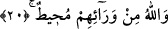
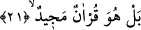
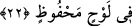

içinde kaldıklarına kendilerinden üstün olan kimselerin hallerini göremediklerine işâret
vardır.
20. Allah onları arkalarından kuşatmıştır.
“Allah onları arkalarından” kudretiyle “kuşatmıştır.” Bu ifâde onların Allah’ın
azabından kurtulamayacaklarının temsîlî bir ifâdesidir. Bu tıpkı bir kimsenin kendisini
kuşatan düşmanının kaçacak bir delik bırakmayacak şekilde kuşatması tarzında temsîlî
bir ifâdedir.
et-Te’vilâtü’n-Necmiyye’de şöyle deniliyor: Allah âyetin ifâdesiyle muhîttir. Muhît
olan yâni kuşatan bir kimsenin elinden kuşatılmış olan kimse asla kurtulamaz. Allah
Teâlâ âriflerin nezdinde kâfirleri kuşatmıştır. Hatta mevcudatın tümünü kuşatmıştır.
Mevcudatın tümü Allah’ın mevcudat şeklinde tecellisinden ibarettir. Allah Teâlâ bütün
isimlerinin birliği ile mevcudatın tümüne zat, hayat, ilim, kudret ve diğer sıfatları
itibariyle sirâyet etmiştir. Allah’ın ihatasından ve kuşatmasından maksad işte bu
sirâyetidir. Göklerde ve yerde zerre kadar şey Ondan uzak ve gizli kalamaz. Ondan gizli
kalan herşey yoklara karışır. Derler ki bu ihata ve kuşatma herhangi bir zarfın içine
konulan nesneyi kuşatması gibi değildir. Ayrıca bu küllün parçaları kuşatması gibi de
değildir. Tam tersine bu melzumun lazımını kuşatması gibidir. Çünkü onun mutlak zâtına
mülhak olan taayyunat, onun vâsıtalı veya vâsıtasız levazımıdır, şartlı veya şartsız
levazımıdır. Levazımın çok olması melzumun bir olmasını zedelemez, onunla çelişmez.
Hakikatleri en iyi bilen Allah’tır.
21. Hakikatte o (yalanladıkları) şerefli Kur’an’dır.
Yani gerçek onların dedikleri gibi değildir. Tam tersine onların yalanladıkları bu
Kur’an şereflidir, gerek yazı gerek mânâ itibariyle ilahi kitaplar arasında yüce bir
tabakadadır. Dünyevi ve uhrevi güzellikleri içermektedir.
22. (Aslı) levh-i mahfuzda bulunmaktadır.
Yani o Kur’an tahrif edilmekten, şeytanların kendisine ulaşmasından korunmuş Levh-i